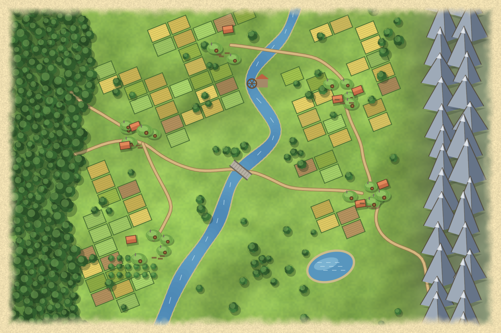
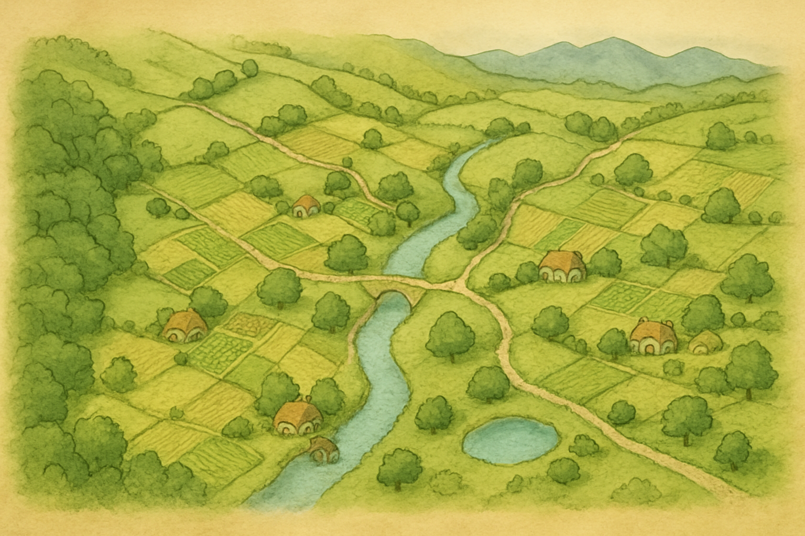
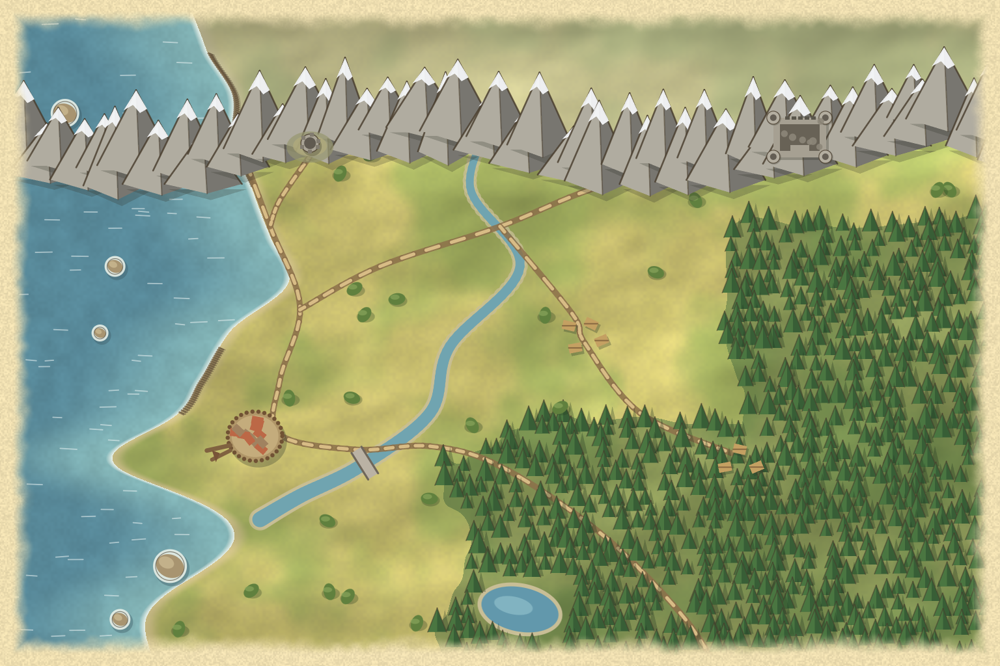
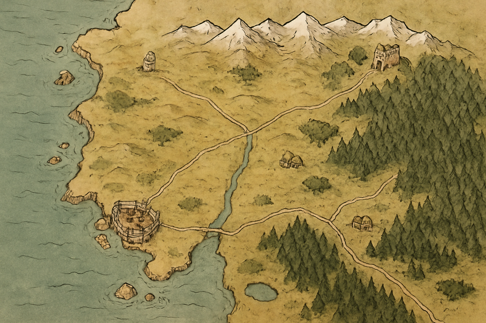

The same brief for both, a gentle farming country in the spirit of the Shire, at the same size (1536 x 1024, 3:2). Left: drawn by Claude with code (scripts/make-regional-map.mjs, no image model, exact and repeatable). Right: painted by ChatGPT's image model (gpt-image-1, medium quality, about $0.05) from the prompt below.

Claude (code-drawn). Strictly top-down; every river, road, field and village is a known object with a known position, so a hex grid, travel distances and place names can be laid on exactly. Flat, clean "map art"; fields and mountains look repetitive.

ChatGPT (image model). Painterly, charming and varied; reads as a place at once. Drawn at a slight bird's-eye angle rather than flat top-down, features are not exact (the road and river are only roughly where the prompt put them), and you cannot ask for "a village at hex 12,7".
Round 2: a rugged frontier coast
Same idea, a different land: sea and cliffs on the west, moor and hills, pine forest, mountains across the north, a walled harbour town, hamlets and two ruins. Same size, 1536 x 1024. Left: Claude's code. Right: ChatGPT's image model.

Claude (code-drawn). Everything is where the code put it, but the composition is weaker: the mountains form a wall, the ruins sit inside it, the river stops short of the sea and the coast is smooth. Flat shapes and one repeating pine.

ChatGPT (image model). A real map feel: ragged cliffs and islets, an ink-and-wash mountain range, varied forest, a palisaded harbour with a bridge, a tower and a ruined keep in sensible places. Slightly angled view, and the exact positions are the model's, not ours.
The prompts both were given
Round 1 prompt
Asked for plain features instead of the trademarked name: the generator is more reliable with a description than with a name. The same words were my brief for the code.